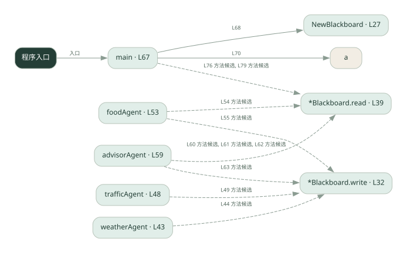

2-13 · 全课程第 33 节
黑板协作
031.go
源码快照 95d97c4a67a7 · 静态解析 · 2026-09-10
01 / 要完成的事
所有角色读写同一块黑板，逐步补齐最终建议所需的信息。
02 / 为什么要做
角色不必两两传消息，可以从公共状态发现已有资料。
03 / 当前代码状态
主要展示本地计算、内存状态或模拟流程；是否写文件/启动子进程请看调用表。 本次只做静态解析，没有运行练习，也没有替你填写或修改原代码。
04 / 调用图
打开大图 ↗实线：源码中的直接调用；虚线：函数引用/注册、动态调用或按方法名推断的候选。L 是调用所在源码行号。箭头不表示执行顺序或每次必经；分支、循环、异步调度及框架内部调用需结合源码。灰色是外部/未解析目标，橙色是动态分发；省略 print、len 和常规容器操作以减少干扰。孤立函数可能尚未接入。

先从 main（程序入口） 出发，沿箭头找到本文件函数，再查看外部调用或动态分发。右侧调用清单保留所有静态调用点，能回到原文件逐行对照。
05 / 函数定位
| 函数 / 定义行 | 职责（源码注释） | 内部调用 |
|---|---|---|
NewBlackboardL27 | 以源码函数体为准；下列调用展示其依赖。 | make |
*Blackboard.writeL32 | write：把 value 写到黑板（以 key 为键） | 未发现显式函数调用（可能直接计算、读写状态或尚未实现） |
*Blackboard.readL39 | read：读黑板上的 key。 | 未发现显式函数调用（可能直接计算、读写状态或尚未实现） |
weatherAgentL43 | 以源码函数体为准；下列调用展示其依赖。 | bb.write |
trafficAgentL48 | 以源码函数体为准；下列调用展示其依赖。 | bb.write |
foodAgentL53 | 以源码函数体为准；下列调用展示其依赖。 | bb.read, bb.write |
advisorAgentL59 | 以源码函数体为准；下列调用展示其依赖。 | bb.read, bb.write |
mainL67 | 以源码函数体为准；下列调用展示其依赖。 | NewBlackboard, fmt.Println, a, fmt.Printf, bb.read |
这样做的优点
中间结果集中、方便检查与复用。
代价与局限
字段约定和执行顺序隐含依赖；并发写入、过期信息需额外管理。
适用场景
多个步骤补齐一个结构化结果。
不宜直接照搬
严格隔离数据、或无共同状态结构的任务。
动手检验理解
先执行依赖天气的推荐者，检查缺失天气时输出是否合理。
有未实现位置时先预测，再补齐验证。能启动不等于逻辑正确。
查看全部 18 个静态调用 / 引用点
| 调用方 | 目标 | 源码行 | 类型 |
|---|---|---|---|
| NewBlackboard | make | 28 | 调用 |
| weatherAgent | bb.write | 44 | 调用 |
| trafficAgent | bb.write | 49 | 调用 |
| foodAgent | bb.read | 54 | 调用 |
| foodAgent | bb.write | 55 | 调用 |
| advisorAgent | bb.read | 60 | 调用 |
| advisorAgent | bb.read | 61 | 调用 |
| advisorAgent | bb.read | 62 | 调用 |
| advisorAgent | bb.write | 63 | 调用 |
| main | NewBlackboard | 68 | 调用 |
| main | fmt.Println | 70 | 调用 |
| main | a | 70 | 调用 |
| main | fmt.Println | 74 | 调用 |
| main | fmt.Printf | 76 | 调用 |
| main | bb.read | 76 | 调用 |
| main | fmt.Printf | 79 | 调用 |
| main | bb.read | 79 | 调用 |
| main | fmt.Println | 80 | 调用 |